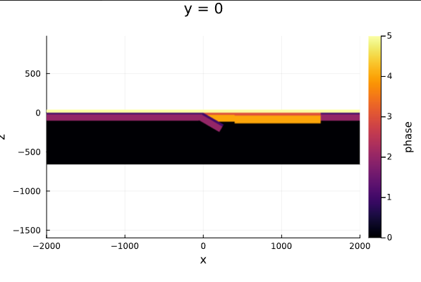
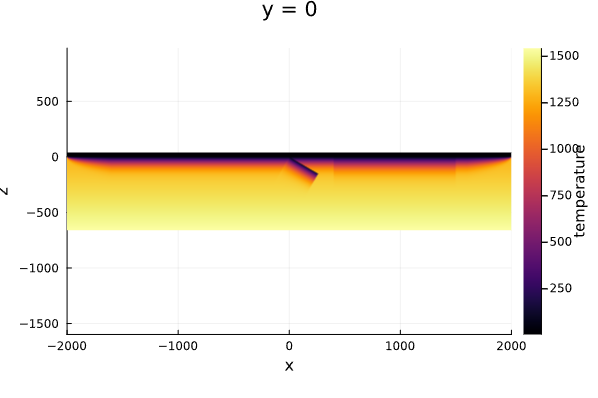
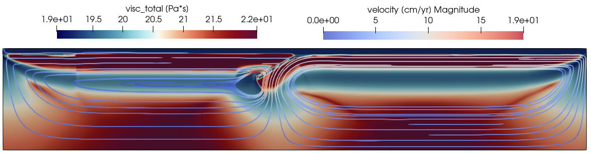

2D Thermomechanical subduction model
In this example, we will show how to create a 2D thermomechanical model of subduction. Here the setup is saved into a julia script. First create a textfile called TM_Subduction_example.jl in your current directory. The easiest is to use Visual Studio Code for this, but you can in principle use any text editor.
1. Load necessary packages
Next start julia in the directory where you saved TM_Subduction_example.jl, or go to correct directory within julia
Note that you can do the following steps directy from the julia REPL (command prompt), or you can write them in TM_Subduction_example.jl and run that file by typing
julia> include("TM_Subduction_example.jl")We get started by loading the required packages:
using LaMEM, GeophysicalModelGenerator, Plots2. LaMEM model setup
The setup will include 6 different materials with the following ID's:
# material id's
# 0: asthenosphere
# 1: oceanic crust
# 2: oceanic lithosphere
# 3: continental crust
# 4: continental lithosphere
# 5: air layermodel = Model(Grid( x = [-2000.,2000.],
y = [-2.5,2.5], # <- model is 2D, size in y-direction is choosen to be close to a cube shape for the cell
z = [-660,40] ,
nel = (512,1,128) ),
BoundaryConditions( temp_bot = 1565.0,
temp_top = 20.0,
open_top_bound = 1),
Scaling(GEO_units( temperature = 1000,
stress = 1e9Pa,
length = 1km,
viscosity = 1e20Pa*s) ),
Time(nstep_max=20) ) This initializes the initial LaMEM model setup with a number of default options. On the REPL it will show the following info
LaMEM Model setup
|
|-- Scaling : GeoParams.Units.GeoUnits{GEO}
|-- Grid : nel=(512, 1, 128); xϵ(-2000.0, 2000.0), yϵ(-8.0, 8.0), zϵ(-660.0, 40.0)
|-- Time : nstep_max=20; nstep_out=1; time_end=1.0; dt=0.05
|-- Boundary conditions : noslip=[0, 0, 0, 0, 0, 0]
|-- Solution parameters : eta_min=1.0e18; eta_max=1.0e25; eta_ref=1.0e20; act_temp_diff=0
|-- Solver options : direct solver; superlu_dist; penalty term=10000.0
|-- Model setup options : Type=files;
|-- Output options : filename=output; pvd=1; avd=0; surf=0
|-- Materials : 0 phases; In this case we assume that we have dimensions in kilometers and times in million years (the default).
Inspecting/modifying parameters
Each of the parameters in this model setup can be modified. The easiest way to see what is available is by using the REPL. If you type
julia> model.and now use your TAB button, you will see all the fields within the model structure:
julia> model.
BoundaryConditions FreeSurface Grid Materials ModelSetup Output Scaling SolutionParams
Solver TimeIf you want to see which timestepping parameters are set, you type:
julia> model.Time
LaMEM Timestepping parameters:
time_end = 1.0
dt = 0.05
dt_min = 0.01
dt_max = 0.2
dt_out = 0.2
inc_dt = 0.1
CFL = 0.5
CFLMAX = 0.8
nstep_max = 20
nstep_out = 1
nstep_rdb = 100
nstep_ini = 1
time_tol = 1.0e-8 The parameters that are changed from the default settings are highlighted in blue (not visible on this markdown document, but visible in the REPL).
If you want to see what each of these parameters mean, you can get some basic help with:
help?> Time
search: Time time Timer time_ns timedwait mtime ctime @time @timev @timed @time_imports @showtime optimize_ticks optimize_datetime_ticks Read_LaMEM_timestep
Structure that contains the LaMEM timestepping information. An explanation of the paramneters is given in the struct `Time_info`
• time_end::Float64: simulation end time
• dt::Float64: initial time step
• dt_min::Float64: minimum time step (declare divergence if lower value is attempted)
• dt_max::Float64: maximum time step
• dt_out::Float64: output step (output at least at fixed time intervals)
• inc_dt::Float64: time step increment per time step (fraction of unit)
• CFL::Float64: CFL (Courant-Friedrichs-Lewy) criterion
• CFLMAX::Float64: CFL criterion for elasticity
• nstep_max::Int64: maximum allowed number of steps (lower bound: timeend/dtmax)
• nstep_out::Int64: save output every n steps; Set this to -1 to deactivate saving output
• nstep_rdb::Int64: save restart database every n steps
• num_dt_periods::Int64: number of time stepping periods
• time_dt_periods::Vector{Int64}: timestamps where timestep should be fixed (first entry has to 0)
• step_dt_periods::Vector{Float64}: target timesteps ar timestamps above
• nstep_ini::Int64: save output for n initial steps
• time_tol::Float64: relative tolerance for time comparisonsIf you want to change one of the parameters, say the maximum number of timesteps, you can do that with:
julia> model.Time.nstep_max=100
100You can verify that this has been changed with:
julia> model.Time
LaMEM Timestepping parameters:
time_end = 1.0
dt = 0.05
dt_min = 0.01
dt_max = 0.2
dt_out = 0.2
inc_dt = 0.1
CFL = 0.5
CFLMAX = 0.8
nstep_max = 100
nstep_out = 1
nstep_rdb = 100
nstep_ini = 1
time_tol = 1.0e-8 Set timestepping parameters
Ok, lets change a few parameters at the same time. Here the maximum time (time_end) is set to a large value (2000 Myrs) as we want to limit the simulation using nstep_max = 400, which implies that we will perform 400 timesteps
model.Time = Time( time_end = 2000.0,
dt = 0.001,
dt_min = 0.000001,
dt_max = 0.1,
nstep_max = 400,
nstep_out = 10
)Note that you can achieve the same results with:
model.Time.time_end = 2000.0
model.Time.dt = 0.001
model.Time.dt_min = 0.000001
model.Time.dt_max = 0.1
model.Time.nstep_max = 400
model.Time.nstep_out = 10Set solution parameters
We activate shear heating and adiabatic heating, as well as thermal diffusion, and set the minimum and maximum viscosities of the model as:
model.SolutionParams = SolutionParams( shear_heat_eff = 1.0,
Adiabatic_Heat = 1.0,
act_temp_diff = 1,
eta_min = 5e18,
eta_ref = 1e21,
eta_max = 1e25,
min_cohes = 1e3
)Set surface topography
In our simulation, we want to take a free surface into account. In LaMEM that is done with a sticky air layer (phase 5 here), combined with a mesh that tracks the location of the free surface. You need to activate the free surface, tell LaMEM which phase is the sticky air phase and what the initial free surface level is at the beginning of the simulation (0 km). Do that with:
model.FreeSurface = FreeSurface( surf_use = 1, # free surface activation flag
surf_corr_phase = 1, # air phase ratio correction flag (due to surface position)
surf_level = 0.0, # initial level
surf_air_phase = 5, # phase ID of sticky air layer
surf_max_angle = 40.0 # maximum angle with horizon (smoothed if larger))
)Set model output
We update the list of fields saved as output:
model.Output = Output( out_density = 1,
out_j2_strain_rate = 1,
out_surf = 1,
out_surf_pvd = 1,
out_surf_topography = 1,
out_j2_dev_stress = 1,
out_pressure = 1,
out_temperature = 1, )Set some background properties, later overwritten
The model geometry in LaMEM is defined by two arrays: model.Grid.Temp and model.Grid.Phase which sets the initial temperature and phase at every point. These are 3D arrays that can be modified; in the usual case temperatures are assumed to be in Celcius, and the phases are integers (0-5 here).
Lets specify a few helpful parameters, such as the adiabatic temperature throughout the model (0.4°C/km) and the mantle potential temperature at the surface 1280°C:
Tair = 20.0;
Tmantle = 1280.0;
Adiabat = 0.4Next, we set the temperature everwhere to (will be overwrittem later) and all phases to 0 with
model.Grid.Temp .= Tmantle .+ 1.0; # set mantle temperature (without adiabat at first)
model.Grid.Phases .= 0; # Set Phases to 0 everywhere (0 is/will be asthenosphere in this setup):Setup temperature of the air to be 20°C
Next we set all "air" particles to Tair:
model.Grid.Temp[model.Grid.Grid.Z .> 0] .= Tair;We can quickly verify that this has been done on the REPL with:
julia>julia> model.Grid
LaMEM grid with constant Δ:
nel : ([512], [1], [128])
marker/cell : (3, 3, 3)
x ϵ [-2000.0 : 2000.0]
y ϵ [-8.0 : 8.0]
z ϵ [-660.0 : 40.0]
Phases : range ϵ [0 - 0]
Temp : range ϵ [20.0 - 1281.0]Setup the air layer (id = 5) if Z > 0.0
Set the air particles to 5:
model.Grid.Phases[model.Grid.Grid.Z .> 0.0 ] .= 5;Add left oceanic plate
An oceanic plate can be added using the AddBox!() function of the GeophysicalModelGenerator package (see ?GeophysicalModelGenerator.AddBox! for more information, or check out the online help of the package). The lithosphere to asthenosphere temperature is set to 1250°C. If temperature of the plate is > 1250°C then the material is turned to asthenosphere. The temperature profile of the plate is set using a half space cooling temperature and a spreading rate velocity of 0.5 cm/yr with the ridge prescribed to be at the "left" of the box.
AddBox!(model; xlim = (-2000.0, 0.0),
ylim = (model.Grid.coord_y...,),
zlim = (-660.0, 0.0),
Origin = nothing, StrikeAngle=0, DipAngle=0,
phase = LithosphericPhases(Layers=[20 80], Phases=[1 2 0] ),
T = SpreadingRateTemp( Tsurface = Tair,
Tmantle = Tmantle,
MORside = "left",
SpreadingVel= 0.5,
AgeRidge = 0.01;
maxAge = 80.0 ) )Add right oceanic plate
Same for the plate on the right:
AddBox!(model; xlim = (1500, 2000),
ylim = (model.Grid.coord_y..., ),
zlim = (-660.0, 0.0),
Origin = nothing, StrikeAngle=0, DipAngle=0,
phase = LithosphericPhases(Layers=[20 80], Phases=[1 2 0] ),
T = SpreadingRateTemp( Tsurface = Tair,
Tmantle = Tmantle,
MORside = "right",
SpreadingVel= 0.5,
AgeRidge = 0.01;
maxAge = 80.0 ) )Add overriding plate margin
For the overriding plate margin the age is fixed to 90 Ma using HalfspaceCoolingTemp().
AddBox!(model; xlim = (0.0, 400.0),
ylim = (model.Grid.coord_y[1], model.Grid.coord_y[2]),
zlim = (-660.0, 0.0),
Origin = nothing, StrikeAngle=0, DipAngle=0,
phase = LithosphericPhases(Layers=[25 90], Phases=[3 4 0] ),
T = HalfspaceCoolingTemp( Tsurface = Tair,
Tmantle = Tmantle,
Age = 80 ) )Add overriding plate craton
AddBox!(model; xlim = (400.0, 1500.0),
ylim = (model.Grid.coord_y...,),
zlim = (-660.0, 0.0),
Origin = nothing, StrikeAngle=0, DipAngle=0,
phase = LithosphericPhases(Layers=[35 100], Phases=[3 4 0] ),
T = HalfspaceCoolingTemp( Tsurface = Tair,
Tmantle = Tmantle,
Age = 120 ) )Add pre-subducted slab
Here we change the dip angle of the box to 30° to initiates subduction:
AddBox!(model; xlim = (0.0, 300),
ylim = (model.Grid.coord_y...,),
zlim = (-660.0, 0.0),
Origin = nothing, StrikeAngle=0, DipAngle=30,
phase = LithosphericPhases(Layers=[30 80], Phases=[1 2 0], Tlab=1250 ),
T = HalfspaceCoolingTemp( Tsurface = Tair,
Tmantle = Tmantle,
Age = 80 ) )Impose approximate adiabat
We can add a mantle adiabatic temperature to the model with
model.Grid.Temp = model.Grid.Temp - model.Grid.Grid.Z.*Adiabat;Plot preview of the setup
Cross-sections of the model setup showing the temperature and the phase fields can be visualized as follows:
plot_cross_section(model, y=0, field=:temperature)
plot_cross_section(model, y=0, field=:phase)which gives:  
3. Define material parameters
At this stage, we defined the geometry and thermal structures of the model, but we did yet assign material properties to each of the rocktypes.
Softening law
We assume that rocks weaken/soften when they becomes damaged, which can be defined by a softening law. Post-softening strength is defined as 0.05 the initial strength
softening = Softening( ID = 0, # softening law ID
APS1 = 0.1, # begin of softening APS
APS2 = 0.5, # end of softening APS
A = 0.95, # reduction ratio
)Material thermal and rheological properties
Mantle For the mantle, we use a dry olivine rheology:
dryPeridotite = Phase( Name = "dryPeridotite",
ID = 0, # phase id [-]
rho = 3300.0, # density [kg/m3]
alpha = 3e-5, # coeff. of thermal expansion [1/K]
disl_prof = "Dry_Olivine_disl_creep-Hirth_Kohlstedt_2003",
Vn = 14.5e-6,
diff_prof = "Dry_Olivine_diff_creep-Hirth_Kohlstedt_2003",
Vd = 14.5e-6,
G = 5e10, # elastic shear module [MPa]
k = 3, # conductivity
Cp = 1000.0, # heat capacity
ch = 30e6, # cohesion [Pa]
fr = 20.0, # friction angle
A = 6.6667e-12, # radiogenic heat production [W/kg]
chSoftID = 0, # cohesion softening law ID
frSoftID = 0, # friction softening law ID
)Oceanic crust For the oceanic crust we use a low cohesion and a frictional angle equal to 0. The goal is to make the oceanic crust weak enough to lubricate the interface with the overriding plate and allow for self-sustained subduction. Moreover, as density is not pressure and temperature dependent, it is set to be the same as the mantle (3300) in order to be neutrally buoyant with respect to the rest of the lithosphere.
oceanicCrust = Phase( Name = "oceanCrust",
ID = 1, # phase id [-]
rho = 3300.0, # density [kg/m3]
alpha = 3e-5, # coeff. of thermal expansion [1/K]
disl_prof = "Plagioclase_An75-Ranalli_1995",
G = 5e10, # elastic shear module [MPa]
k = 3, # conductivity
Cp = 1000.0, # heat capacity
ch = 5e6, # cohesion [Pa]
fr = 0.0, # friction angle
A = 2.333e-10, # radiogenic heat production [W/kg]
)Oceanic mantle lithosphere The oceanic mantle lithosphere has the same properties as the mantle but a different name and different phase. To simplify your life, you can use the copy_phase function for that:
oceanicLithosphere = copy_phase( dryPeridotite,
Name = "oceanicLithosphere",
ID = 2
)Continental crust
continentalCrust = copy_phase( oceanicCrust,
Name = "continentalCrust",
ID = 3,
disl_prof = "Quarzite-Ranalli_1995",
rho = 2700.0,
ch = 30e6,
fr = 20.0,
A = 5.3571e-10,
chSoftID = 0,
frSoftID = 0,
)Continental lithosphere
continentalLithosphere = copy_phase( dryPeridotite,
Name = "continentalLithosphere",
ID = 4
)Sticky air Finally, the "air" in our model is a layer with low density and low viscosity, such that it essentially gives very low stresses compared to those within the lithosphere. We cannot give it the viscosity of real air, as this results in a too large viscosity jump at the surface (geodynamic codes cannot handle that). We therefore also often call this "sticky air". Note that we also give it a very high thermal conductivity to ensure that the temperature within the air layer remains more or less constant throughout a simulation (and equal to the temperature at the upper boundary of the model):
air = Phase( Name = "air",
ID = 5, # phase id [-]
rho = 50.0, # density [kg/m3] # coeff. of thermal expansion [1/K]
eta = 1e19,
G = 5e10, # elastic shear module [MPa]
k = 100, # conductivity
Cp = 1e6, # heat capacity
ch = 10e6, # cohesion [MPa]
fr = 0.0, # friction angle
)Add phases to the model
Finally, we can add all these phases to the model with:
rm_phase!(model)
add_phase!( model,
dryPeridotite,
oceanicCrust,
oceanicLithosphere,
continentalCrust,
continentalLithosphere,
air
)Add softening law
Same with the softening law:
add_softening!( model,
softening
)Set solver options
The PETSc command -da_refine_y 1 allow to run the model as 2D
model.Solver = Solver( SolverType = "multigrid",
MGLevels = 3,
MGCoarseSolver = "superlu_dist",
PETSc_options = [ "-snes_ksp_ew",
"-snes_ksp_ew_rtolmax 1e-4",
"-snes_rtol 5e-3",
"-snes_atol 1e-4",
"-snes_max_it 200",
"-snes_PicardSwitchToNewton_rtol 1e-3",
"-snes_NewtonSwitchToPicard_it 20",
"-js_ksp_type fgmres",
"-js_ksp_max_it 20",
"-js_ksp_atol 1e-8",
"-js_ksp_rtol 1e-4",
"-snes_linesearch_type l2",
"-snes_linesearch_maxstep 10",
"-da_refine_y 1"
]
)4. Perform the simulation
Here we run LaMEM on 8 cores (if you have them; use less otherwise):
julia> run_lamem(model, 8)
Saved file: Model3D.vts
(Nprocx, Nprocy, Nprocz, xc, yc, zc, nNodeX, nNodeY, nNodeZ) = (4, 1, 2, [-2000.0, -1000.0, 0.0, 1000.0, 2000.0], [-8.0, 8.0], [-660.0, -310.0, 40.0], 513, 2, 129)
Writing LaMEM marker file -> ./markers/mdb.00000000.dat
Writing LaMEM marker file -> ./markers/mdb.00000001.dat
Writing LaMEM marker file -> ./markers/mdb.00000002.dat
Writing LaMEM marker file -> ./markers/mdb.00000003.dat
Writing LaMEM marker file -> ./markers/mdb.00000004.dat
Writing LaMEM marker file -> ./markers/mdb.00000005.dat
Writing LaMEM marker file -> ./markers/mdb.00000006.dat
Writing LaMEM marker file -> ./markers/mdb.00000007.dat
--------------------------------------------------------------------------
Lithosphere and Mantle Evolution Model
Compiled: Date: Apr 7 2023 - Time: 22:11:23
Version : 1.2.4
--------------------------------------------------------------------------
STAGGERED-GRID FINITE DIFFERENCE CANONICAL IMPLEMENTATION
--------------------------------------------------------------------------
Parsing input file : output.dat
Finished parsing input file : output.dat
--------------------------------------------------------------------------
Scaling parameters:
Temperature : 1000. [C/K]
Length : 1000. [m]
Viscosity : 1e+20 [Pa*s]
Stress : 1e+09 [Pa] The results will be saved in the directory where you performed the simulation and can be visualized in Paraview by opening the file output.pvd: 
Remark on performing parallel simulations
Using more processors or cores does not necessarily imply that the simulation will be faster. There is a tradeoff between the number of processors, the resolution, the number of multigrid levels, the machine you use and the speed of the simulation. At some stage it actually becomes slower!
Unfortunately, it is hard to predict when this happens as this is setup- and machine-dependent. We can thus not automatize this, and our recommendation is therefore that you experiment with this. Run the simulation for a limited number of timesteps (say 5 or so) and check its speed for different number of cores.